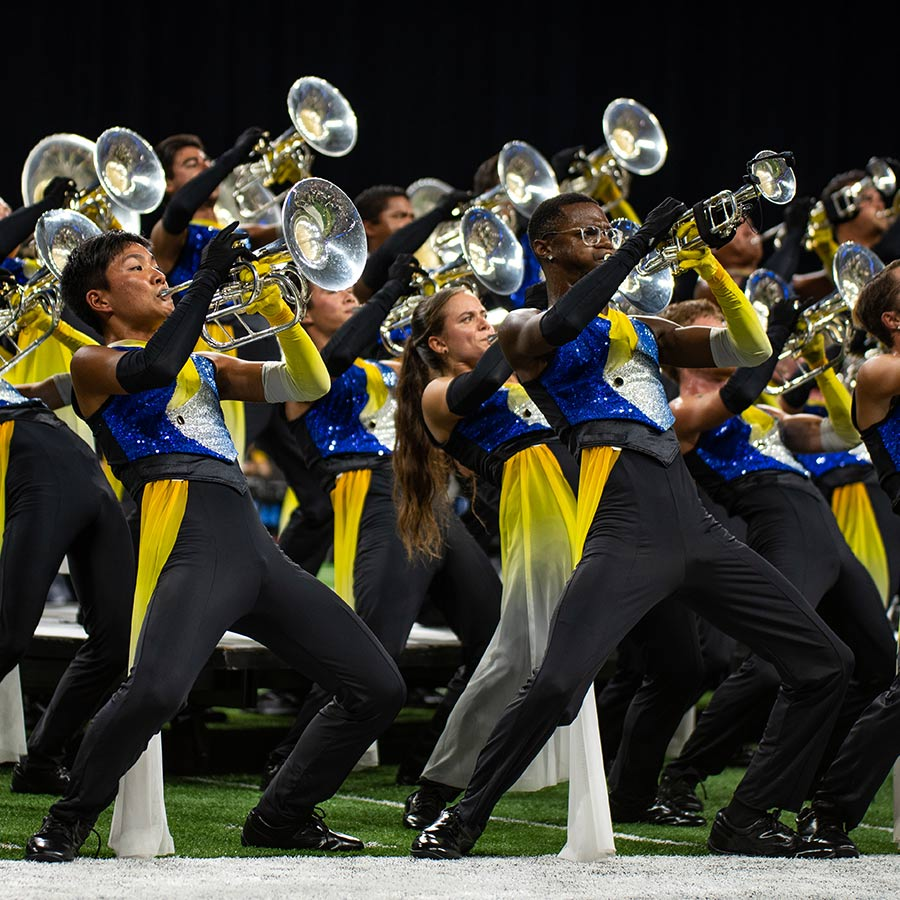

ここでは有名なマーチングチームの「Blue Devils」について紹介します
もっとも広義においては、歩きながら楽器演奏し、ときにはダンスチームやカラーガードなどと行進するバンドのことで、
今回、私が紹介したい「Blue Devils」というチームは屋外競技場など広大な野外での演奏・演技するフィールドドリルと言われるマーチングバンドの種類です。
・アメリカ合衆国カリフォルニア州コントラコスタ郡コンコードを拠点とするドラムコー（マーチングバンド）。
・
世界的に有名な大会であるDCIでは、最多の19回の優勝記録を誇り、またDCI史上最高スコアも保持している
